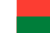
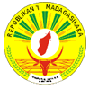
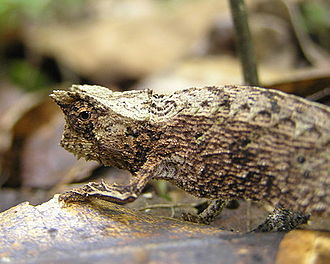
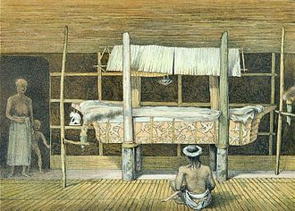

3eme Republique Madagascar
Sommaire

geographie:
histoire:
- Epoque coloniale:
- Independance vers 1960
- Vers la 3eme republique
economie:
Acceuil
Madagascar
Devise nationale
Fitiavana, Tanindrazana, Fandrosoana (Amour, Mère patrie, Progrès)
Hymne national
Ry Tanindrazanay malala ô (Ô, Notre chère terre des ancêtres)
Drapeau de Madagascar

Sceau de Madagascar

La Troisième République (depuis 1991)
1991
L'opposition à Didier Ratsiraka s'amplifie. Des manifestations populaires sont réprimées par l'armée, faisant de nombreuses victimes38. Il s'est avéré nécessaire de rapprocher les protagonistes. Le Premier ministre Guy Razanamasy a fait adopter la Convention du 31 octobre 1991. C'est sur la base de cette convention que les autres solutions de sortie de crise se fondaient.
1992
Après une brève période transitoire où le président Ratsiraka n'assurera qu'une fonction symbolique au profit de Albert Zafy qui dirigera la Haute Autorité de l'État, une nouvelle Constitution est adoptée par référendum, et Albert Zafy, candidat de l'opposition, est élu à la présidence en 1993.
1993
Instauration d'un régime parlementaire. L'Assemblée nationale élit Me Francisque Ravony, au poste de Premier ministre. Début d'un libéralisme économique et politique sans précédent. La démocratie est devenue le leitmotiv du régime de Zafy, soucieux de se distinguer de son prédécesseur. Il instaure aussi un nouveau style de gouvernement voulant selon lui se rapprocher et être au contact du « peuple ». Il multiplie les tournées en province et dans les campagnes les plus reculées (le fameux « Mada Raid »), délaissant ainsi la capitale où se joue un jeu politique des plus mouvementés. Il s'ensuit une certaine instabilité politique caractérisée par les multiples motions de censure et changements de gouvernement, situation que le Président Zafy n'a de toute façon pas le pouvoir de maîtriser. Par ailleurs, l'ajustement structurel de l'économie est au point mort, la croissance tant attendue et promise n'est pas au rendez-vous, les dirigeants malgaches s'étant de plus aventurés et égarés dans les « financements parallèles ». Le torchon a fini par brûler entre Albert Zafy et son Premier ministre soutenu par les députés de la majorité. Le président a dû faire appel à un référendum constitutionnel donnant le pouvoir au président de la République de nommer le Premier ministre afin de destituer Me Ravony, remplacé par le Dr Emmanuel Rakotovahiny.
1996
Cet amendement de la Constitution sonna quelque peu le glas du parlementarisme, ce qui provoqua une guerre ouverte entre le président et les députés, laquelle se soldera d'abord par une nouvelle motion de censure du gouvernement et surtout par le vote en juin 1996 de la motion d'empêchement définitif du président par 93 députés sur 135. Le Premier ministre Norbert Ratsirahonana devient chef de l'État par intérim en attendant les nouvelles élections. L'amiral Didier Ratsiraka, rentré quelques mois plus tôt de son exil en France, est réélu au 2e tour de l’élection présidentielle (contre Zafy). Madagascar connaît une période de stabilité économique jusqu'en 2001 avec 4,3 % de croissance annuelle moyenne.
2001
Le maire de la capitale, Marc Ravalomanana, arrive en tête de l'élection présidentielle de décembre 2001. Un second tour est prévu mais celui-ci revendique la victoire dès le premier tour sur la base des résultats publiés par son propre quartier général à Ankorondrano (quartier de Tananarive). Ravalomanana dénonce une fraude électorale massive et décide d'acculer ainsi le régime Ratsiraka. Le président Didier Ratsiraka tente de reprendre la main en modifiant les membres de la Haute Cour Constitutionnelle, chargée de proclamer les résultats électoraux à Madagascar. Le candidat Ravalomanana réclame la confrontation des procès-verbaux en sa possession et les procès-verbaux officiels. Le régime refuse une telle méthode jugée « illégale » mais exhorte les opposants à participer au second tour.
2002
Marc Ravalomanana est élu président de la République et nomme plus tard Me Jacques Sylla, « Premier ministre ». La capitale étant acquise à la cause de l'ancien maire, Didier Ratsiraka décide de délocaliser le siège du gouvernement à Toamasina, son fief et principal port de l'île situé dans l'est. Le régime érige des barrages routiers pour paralyser et asphyxier la capitale, ce qui finit par paralyser tout le pays. À l'invitation de l'Union Africaine et du président du Sénégal Abdoulaye Wade, les deux parties protagonistes se réunissent à Dakar et signent des accords en avril 2002 qui prévoit notamment un nouveau décompte des voix, l'organisation d'un référendum (à la place d'un second tour) si la majorité absolue n'était pas obtenue et l'instauration d'un gouvernement d'union nationale dirigé par M. Ravalomanana. Ces accords ne seront pas respectés par les deux parties qui camperont sur leur position, une fois rentrés au pays. Ravalomanana ne relâche pas la pression et finit par obtenir l'annulation de la nomination de la nouvelle Haute Cour constitutionnelle en raison d'un vice de forme, la Cour précédente, reconduite dans ses fonctions, se charge de procéder à la publication des résultats des élections. En mai 2002, Marc Ravalomanana est déclaré vainqueur dès le premier tour avec plus de 51 % des voix. Il est investi dans ses fonctions de président de la République une semaine plus tard. Il confirme Jacques Sylla au poste de Premier ministre. Il décide de faire appel aux réservistes de l'armée pour lancer des expéditions contre les troupes fidèles à Didier Ratsiraka et pour « libérer » les provinces des barrages. Les deux camps s'affrontent désormais militairement. En juillet 2002, Toamasina, la dernière province où le camp Ratsiraka s'est retranché est tombé entre les mains de Ravalomanana. Didier Ratsiraka prend la fuite avec ses fidèles à bord d'un avion à destination de la France. Les pays occidentaux, les États-Unis en tête, et la France en dernier, reconnaissent la victoire de Ravalomanana. Cependant, l'Union africaine, l'ONU et les bailleurs de fonds ne reconnaissent le régime de Marc Ravalomanana qu'en janvier 2003, à la suite des élections législatives remportées par son parti. À la fin de son premier mandat, le président Marc Ravalomanana élabore sa vision « Madagascar Naturellement » et met en œuvre le Madagascar Action Plan (MAP), un nouveau programme de développement pour 5 ans39.
2006
En décembre, le président Marc Ravalomanana est réélu dès le premier tour avec 56 % des voix pour un second mandat de 5 ans40, avec comme principal objectif la réalisation du MAP.
2007
En avril 2007, Marc Ravalomanana fait modifier par voie référendaire la Constitution dans un sens qui renforce les pouvoirs présidentiels en permettant les ordonnances « en cas d’urgence et de catastrophe ». Cette révision introduit en outre l’anglais comme troisième langue officielle, modifie la structure administrative en remplaçant les six provinces autonomes par 22 régions et supprime le caractère laïc de l’État malgache10. L’opposition voit dans cette révision des risques de dérive autocratique tandis que l’Église catholique romaine malgache critique sévèrement l’organisation du référendum, et pointe « le pouvoir exorbitant » accordé au président. Les autorités épiscopales catholiques craignent que le président Ravalomanana, qui est vice-président de la puissante Église réformée de Madagascar42 interfère directement dans les activités religieuses.
2008
Au fil des années, les partis d'opposition accusent le régime de paralyser les entreprises locales comme la Savonnerie tropicale43,44, la société le Quartz45. Le gouvernement ne serait pas neutre vis-à-vis des diverses concurrences entre entreprises, qui devraient ne compter que sur elles-mêmes pour assurer leur gestion. Marc Ravalomanana est également pointé du doigt par l'opposition pour avoir « éliminé » les entrepreneurs malgaches performants, accaparé leurs affaires pour se placer lui-même dans tous les secteurs économiques bénéficiaires46. Le problème principal est que des luttes intestines incessantes conjuguées à l'âge de la majorité des élites négligeant leur succession a creusé un vide politique et amené un cruel défaut d'émulation. Le processus électoral est également fortement décrié par les opposants, qui voudraient lui apporter de fortes améliorations afin d'éviter les troubles lors de chaque élection présidentielle.